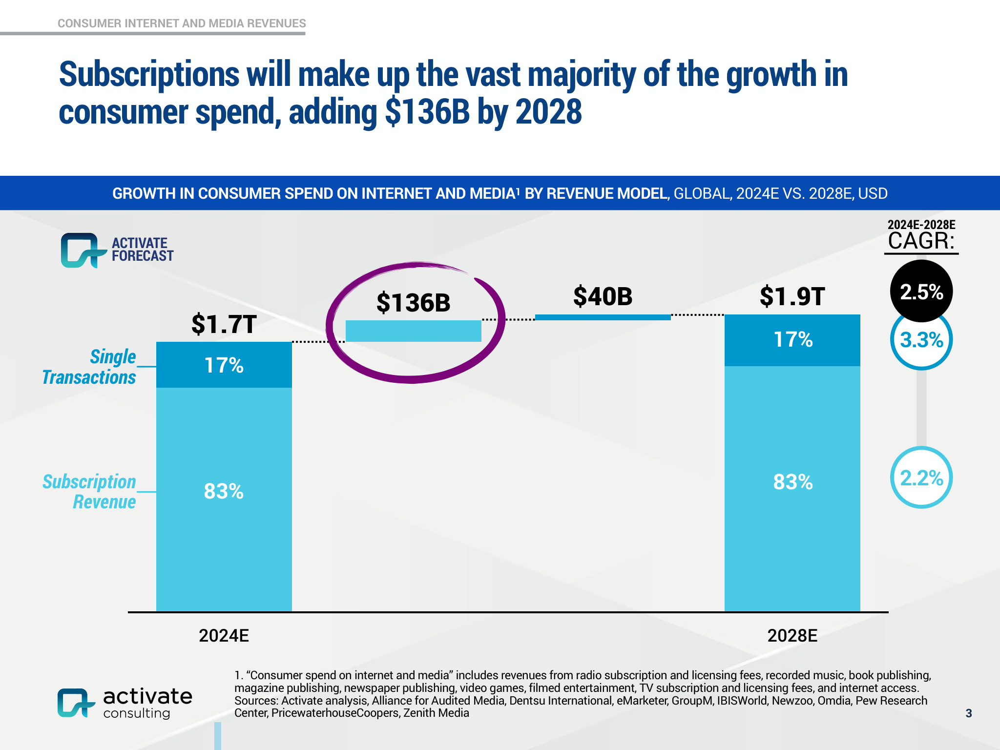
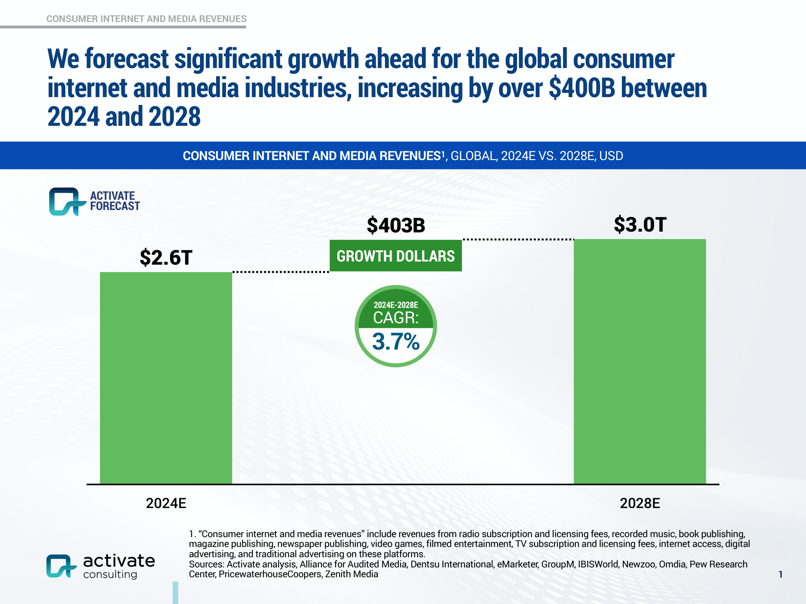

Preview

Activate forecasts global consumer internet and media revenues to rise from $2.6T (2024E) to $3.0T (2028E), adding $403B at a 3.7% CAGR. Advertising grows fastest and contributes over half of total growth. Consumer spend increases from $1.7T to $1.9T, with subscriptions driving most of the gain. Subscriptions outpace single transactions in both growth rate and dollar contribution.

Consumer Internet and Media Revenues, Global, 2024E vs. 2028E (Activate Forecast)


“We forecast significant growth ahead for the global consumer internet and media industries, increasing by over $400B between 2024 and 2028” — Unknown
For brands, the faster-growing advertising slice (5.9% CAGR) signals expanding inventory and performance opportunity, but also fiercer competition for attention—elevating the importance of creative quality, first-party data, and incrementality testing to sustain ROAS. The subscription-led rise in consumer spend (+$136B) favors partners that can bundle, reduce churn, and monetize longer customer lifetimes, making retention metrics just as critical as acquisition. As internet access costs climb (2.7% CAGR), reach and time online should remain robust, but value-conscious consumers may pressure ad relevance and frequency caps. Marketers should rebalance toward high-velocity digital channels while strengthening measurement (MMM + experiments) to attribute lift accurately across paid and subscription touchpoints.